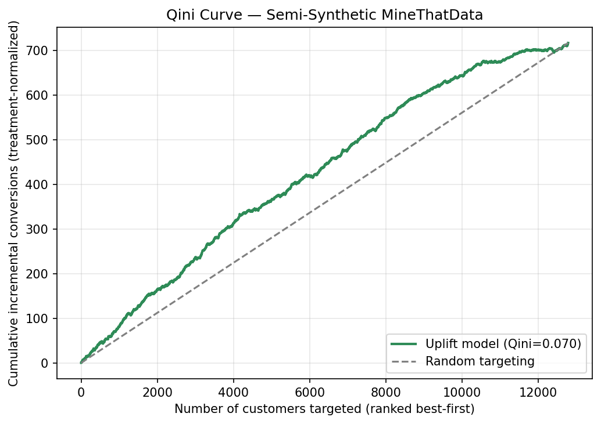

3.6 Modélisation de l’uplift pour le ciblage
À propos de la version française
Cette page est une traduction par IA de la version anglaise de Marketing Science in Python. La version anglaise fait foi et prévaut en cas de divergence. Le code, les notebooks et le texte intégré aux images restent en anglais. Lire la version anglaise
Quels clients devraient recevoir la prochaine campagne ? La plupart des équipes répondent avec un modèle de réponse : classer les clients selon leur probabilité d’achat et cibler le haut de cette liste. Le problème est que de nombreux clients à forte probabilité d’achat convertiront, que vous les contactiez ou non ; dépenser pour eux ne change donc rien. La modélisation de l’uplift classe plutôt les clients selon l’ampleur du changement de comportement attendu du contact : elle cible ceux qui achètent parce que vous les avez contactés, et non ceux qui auraient acheté de toute façon. C’est ce qui la rend utile dès lors que le contact a un coût : le budget doit aller là où il modifie un résultat, et non là où il accompagne une vente qui aurait déjà eu lieu.
- Un modèle de réponse prédit : \(P(\text{purchase})\)
- Un modèle d’uplift prédit : \(P(\text{purchase} \mid \text{treated}) - P(\text{purchase} \mid \text{not treated})\)
Cette seconde quantité est l’effet de traitement par client, le CATE ; la section §3.5 a présenté son estimation. Ce score n’est que l’étape de mesure. L’étape suivante consiste à le transformer en règle de ciblage et à vérifier, sur des données réservées à l’évaluation, si agir selon ce classement crée effectivement de la valeur.

Comprendre les clients à cibler
Pour bien appliquer la modélisation de l’uplift, il est utile de se représenter quatre types de clients, définis par leur réaction au contact.

- Les convaincables : ils n’achètent que s’ils sont contactés. Ce sont les cibles idéales ; l’e-mail modifie leur comportement, et tout votre rendement vient d’eux.
- Les acquis : ils achètent dans les deux cas. Les contacter consomme du budget sans générer de vente supplémentaire.
- Les causes perdues : ils n’achètent jamais. Le contact est inutile.
- Ceux à laisser tranquilles : ils auraient acheté d’eux-mêmes, mais le contact les fait fuir. Les solliciter vous coûte réellement.
Un modèle de réponse, qui recherche la probabilité d’achat, remplit sa liste de clients acquis. Un modèle d’uplift, qui recherche l’effet de traitement, vise les convaincables et évite les autres. C’est là toute la différence.
L’uplift compte deux familles de méthodes : les méta-apprenants de la section §3.5 et les arbres de décision conçus pour effectuer leurs divisions directement selon l’uplift, dont l’avantage est de gérer plusieurs modalités de traitement à la fois (comparer des offres de 5 %, 10 % et 20 % dans un seul modèle). Ce chapitre reste sur la voie des méta-apprenants, en utilisant EconML comme dans la section §3.5, ainsi que scikit-uplift pour évaluer le classement ; CausalML, la bibliothèque d’Uber, est la référence établie pour les méthodes fondées sur les arbres.
Le jeu de données
Nous réutilisons l’exemple semi-synthétique MineThatData de la section §3.5 : l’expérience randomisée d’e-mailing de Kevin Hillstrom, limitée aux groupes e-mail pour hommes et absence d’e-mail (42 613 clients, répartis approximativement à parts égales). Les caractéristiques des clients et l’affectation du traitement sont réelles ; seul le résultat est simulé, de sorte que nous connaissons l’effet véritable pour chaque client et pouvons évaluer le modèle à chaque étape. L’effet moyen que nous avons introduit est d’environ 11 points de pourcentage, avec un effet plus élevé pour les acheteurs d’articles pour hommes, les clients récemment actifs et les acheteurs multicanaux.
from msbook.data import load_minethatdata
df = load_minethatdata()
df = df[df['segment'].isin(['Mens E-Mail', 'No E-Mail'])].copy()
df['treatment'] = (df['segment'] == 'Mens E-Mail').astype(int)Chaque ligne correspond à un client : les caractéristiques réelles de Hillstrom, l’indicateur de traitement randomisé et le résultat de conversion simulé servant à l’évaluation.
| Colonne | Signification |
|---|---|
| recency | mois depuis le dernier achat |
| history | dépenses des 12 mois précédents ($) |
| mens | achat d’articles pour hommes (0/1) |
| channel | Téléphone / Web / Multicanal |
| treatment | 1 = e-mail pour hommes, 0 = témoin |
| conversion | achat après la campagne (0/1) |
Notebook associé : sec3.6_uplift_modeling.ipynb construit le score d’uplift de l’apprenant S sur MineThatData et l’évalue à l’aide des courbes d’uplift et de Qini, de l’uplift par décile et d’une règle de ciblage fondée sur la valeur nette.
Voir sur GitHub
Entraîner le modèle d’uplift
Le score d’uplift est simplement le CATE. Nous réajustons les méta-apprenants de la section §3.5 et conservons celui qui retrouve le mieux l’effet véritable sur l’échantillon réservé à l’évaluation : l’apprenant S, dont les estimations présentent une corrélation de 0,77 avec la vérité (la comparaison complète figure dans Table 1, en §3.5). Le CATE qu’il prédit est le score d’uplift, et l’ajustement utilise le même appel à EconML qu’en §3.5 ; il n’y a donc rien de nouveau à installer :
from econml.metalearners import SLearner
from lightgbm import LGBMRegressor
uplift = SLearner(overall_model=LGBMRegressor())
uplift.fit(Y=conversion_train, T=treatment_train, X=X_train)
uplift_score = uplift.effect(X_eval) # one CATE / uplift score per customerÉvaluation
Le score d’uplift n’est utile que si les clients aux scores élevés produisent réellement plus de conversions supplémentaires que ceux aux scores faibles. La première vérification est locale : répartir les clients réservés à l’évaluation en déciles selon leur score d’uplift (décile 0 = score le plus élevé), puis examiner l’uplift dans chacun. Le dispositif semi-synthétique nous permet de comparer trois colonnes : l’uplift prédit par le modèle, l’uplift observé sur l’échantillon randomisé réservé à l’évaluation (la différence de taux de conversion entre clients traités et témoins au sein de chaque décile) et l’uplift véritable.
| Décile | Uplift prédit | Uplift observé | Uplift véritable |
|---|---|---|---|
| 0 (score le plus élevé) | 22.7% | 16.8% | 18.0% |
| 4 (milieu) | 11.4% | 10.8% | 13.4% |
| 9 (score le plus faible) | 1.2% | 3.3% | 5.1% |

Les valeurs exactes de chaque ligne sont bruitées, surtout dans la colonne de l’uplift observé, car chaque décile ne contient qu’environ 1 300 clients. Mais le classement fonctionne : le premier décile présente un uplift observé et véritable beaucoup plus élevé (environ 17 points, contre une moyenne de 11 points) que le dernier décile. C’est cet ordre qu’il nous faut. Nous n’avons pas besoin d’une monotonie parfaite d’un décile à l’autre ; concentrez-vous sur le haut du classement, et non sur les lignes individuelles du bas.
Le tableau par décile donne une vue locale. Le diagnostic global est la courbe de Qini : classez les clients par uplift décroissant et tracez les conversions supplémentaires cumulées, normalisées selon les effectifs de traitement, à mesure que vous descendez dans la liste de ciblage. Un classement porteur d’un véritable signal forme une courbe au-dessus de la diagonale que produirait un contact aléatoire des clients. (La courbe d’uplift simple présente la même forme sur une échelle non normalisée ; la courbe de Qini est la référence pour comparer les modèles d’uplift, car elle reste fiable lorsque la proportion de clients traités varie le long du classement.)

Ici, la courbe reste nettement au-dessus de la droite du ciblage aléatoire dès le départ : cibler les 30 % de clients en tête du classement capte environ 42 % des conversions supplémentaires (contre 30 % avec un ciblage aléatoire), et cibler la première moitié en capte environ 62 %. C’est ce qui justifie d’agir selon ce classement.
Les deux mesures synthétiques d’aire sont positives, ce qui signifie formellement que le classement surpasse le ciblage aléatoire :
from sklift.metrics import uplift_auc_score, qini_auc_score
auuc = uplift_auc_score(conversion_eval, uplift_score, treatment_eval)
qini = qini_auc_score(conversion_eval, uplift_score, treatment_eval)
print(f"AUUC = {auuc:.4f} Qini = {qini:.4f}") # both > 0 ⇒ better than randomAUUC = 0.0404 Qini = 0.0695Ces mesures résument toute la courbe en un seul nombre. Le coefficient de Qini est celui à citer pour comparer des modèles d’uplift : il est positif lorsque le classement fait mieux que le hasard et comparable entre modèles sur le même échantillon d’évaluation, sans être pour autant une mesure absolue de la valeur économique. L’AUUC mesure la même idée sur la courbe d’uplift. Une réserve s’applique aux deux : l’apprenant S a été choisi sur ce même échantillon d’évaluation, ces chiffres sont donc optimistes. Un rapport de production conserve un échantillon final intact pour les chiffres principaux.
Extraire la liste de ciblage
Un score ne devient exploitable que lorsque vous le reliez aux indicateurs économiques. Supposons que chaque conversion supplémentaire apporte $30 de marge et que contacter un client coûte $3. Vous ne devriez alors traiter que les clients dont l’uplift dépasse le seuil de rentabilité de 10 %, et la valeur nette attendue pour chaque client est son uplift multiplié par la valeur d’une conversion, moins le coût du contact :
value_per_conversion = 30.0 # $ margin per incremental conversion
treatment_cost = 3.0 # $ per contacted customer (email + offer)
net_value = uplift_score * value_per_conversion - treatment_cost
# Target the deciles (or customers) where net value > 0.
| Décile | Uplift prédit | Valeur nette par client | Décision |
|---|---|---|---|
| 3 | 13.0% | $0.90 | Cibler |
| 4 | 11.4% | $0.41 | Cibler |
| 5 | 9.7% | -$0.10 | Exclure |
| 6 | 7.6% | -$0.71 | Exclure |
Avec une marge de $30 par conversion supplémentaire et un coût de contact de $3, l’uplift au seuil de rentabilité est de 10 %. Les cinq premiers déciles dépassent ce seuil selon l’uplift prédit ; la règle consiste donc à cibler la première moitié de la liste et à exclure le reste. Ces constantes ne servent qu’à illustrer le propos ; c’est la règle qui compte : convertir l’uplift en valeur attendue, soustraire le coût du contact et ne cibler que là où le résultat est positif. Vous obtenez ainsi votre liste de clients. Dans cette exécution, les colonnes prédite et observée ne concordent pas tout à fait : la valeur nette observée reste positive pendant deux déciles au-delà du seuil prédit. C’est précisément dans cette zone limite qu’un nouvel échantillon randomisé réservé à l’évaluation montre son utilité avant que vous n’engagiez du budget.
Points à retenir
- L’uplift classe les clients selon l’ampleur du changement de comportement causé par le contact, et non selon leur probabilité d’achat. C’est ce qui évite de dépenser le budget pour les clients acquis et pour ceux qu’il vaut mieux laisser tranquilles.
- Confirmez que le classement fait mieux que le hasard sur un nouvel échantillon randomisé réservé à l’évaluation, puis convertissez l’uplift en valeur nette attendue : ne ciblez que là où l’uplift multiplié par la valeur d’une conversion dépasse le coût du contact.